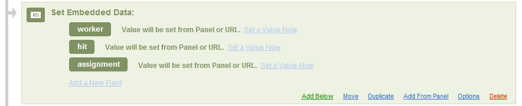
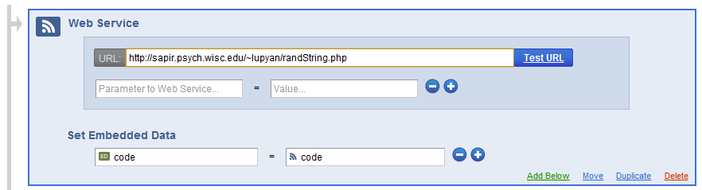

Amazon Mechanical Turk
Contents
Table of Contents
- 1 Amazon Mechanical Turk
- 1.1 Papers describing MTurk methods, demographics, pitfalls, etc.
- 1.2 Various tutorials and software for online experiments
- 1.2.1 MTurk and Qualtrics
- 1.2.2 How to embed a Qualtrics survey in MTurk and give Qualtrics access to worker id and hit id info
- 1.2.3 How to get Qualtrics to parse variables passed in from MTurk
- 1.2.4 How to get Qualtrics to generate a completion code
- 1.2.5 How to prevent a Turker from participating in a HIT related to one they've done before
Amazon Mechanical Turk#
We will be gradually posting various tips on using Mechanical Turk for data collection For now, here are some recommended resources:
Papers describing MTurk methods, demographics, pitfalls, etc.#
A list of papers I compiled
My presentation/tutorial from 6/5/2012
Various tutorials and software for online experiments#
ScriptingRT – platform for building flash based psych experiments. Also includes a nice tutorial on integrating Turk/Qualtrics/ScriptingRT
jsPsych – javascript library for running behavioral experiments in the browser.
MTurk and Qualtrics#
UW has a site license for Qualtrics. When used properly, it’s a fantastic resource allowing you to post both traditional surveys as well as actual experiments involving randomized assignment to groups, complex randomization of conditions, etc. A very nice feature is that Qualtrics allows you to embed HTML5 which can be used for real-time interaction and presentation of things like a briefly flashed image, and much much more. The first thing you’ll want to do after creating your survey/experiment in Qualtrics is to have it play well with MTurk. To make this happen you’ll want to do at least three things:
Give Qualtrics access to the workers’ worker-ids
Embed your Qualtrics survey inside MTUrk so that workers don’t have to open up a whole new window for it (although a separate window may sometimes be preferable).
Have Qualtrics spit out a completion code to verify that they completed the study.
How to embed a Qualtrics survey in MTurk and give Qualtrics access to worker id and hit id info#
When you are creating your HIT, click ‘Edit HTML source’ and paste in
this code, replacing YOUR_FULL_QUALTRICS_URL_HERE with the actual
Qualtrics link you are given when you launch your Qualtrics task
(including the http:// part).
<p>You will be given a code when you complete answering the questions below. Please type it into the box at the bottom</p>
<script type='text/javascript'>
function getParamFromURL( name )
{
name = name.replace(/[\[]/,"\\[").replace(/[\]]/,"\\]");
var regexS = "[\?&]"+name+"=([^&#]*)";
var regex = new RegExp( regexS );
var results = regex.exec( window.location.href );
if( results == null )
return "";
else
return results[1];
}
//GET PARAMETERS
var usernameFromParamString = getParamFromURL( 'workerId' );
var assignmentIdFromParamString = getParamFromURL( 'assignmentId' );
var hitIdFromParamString = getParamFromURL( 'hitId' );
//CREATE AND POST LINK TO REAL HIT
var link = "YOUR_FULL_QUALTRICS_URL_HERE&worker=" + usernameFromParamString + "&assignment="
+ assignmentIdFromParamString + "&hit=" + hitIdFromParamString;
document.write("<iframe src=" +link + " width=\"800\" height=\"600\"><br></iframe>");
</script>
<p>Completion code: <input type="text" name="Q2" id="Q2" size="20" /></p>
Let’s go through this step by step. The code above is a mix of
javascript and HTML. The function getParamFromURL parses the URL to get
three things: the workerID, the assignmentID, and the hitId. The first
is a unique identifier for each worker. The second is a unique code for
this assignment. The third is a unique code for this HIT. Once we have
the fields (the Get Parameteres part of the code), we can insert them
into the URL passed to Qualtrics which can then parse it and include it
in your data file (see instructions below).
The var link part sets up a JavaScript variable containing the link
to the Qualtrics page along with the workerID, assignmentIT, and hitID
info (and anything else you want to pass in). Caveat: These variables
will only be defined if you are actually doing the HIT as a worker. They
won’t work when you test it from the requester page. To test it fully,
use the Workers’ Sandbox MTurk site to do your HIT.
The document.write bit of the code creates an iframe which embeds
the Qualtrics page defined in the link variable right above it. Voila.
When you preview your HIT, it will look something like this:

How to get Qualtrics to parse variables passed in from MTurk#
To read and log variables passed from MTurk, go to ‘Survey Flow’ and add an ‘Embedded Data’ element as the first element of your survey. Then enter the variables you’d like to log (using the names from the code you embedded in the MTurk hit (see above). In my case, I’m logging the variables ‘worker’, ‘hit’, and ‘assignment’.

Now the values of these variables, e.g., the person’s workerID, will be stored alongside the participant’s responses to your Qualtrics questions in the very same output file.
How to get Qualtrics to generate a completion code#
You will want to have Qualtrics generate a ‘completion code’ at the end of the study. The participant then copy/pastes the code into the MTurk box to confirm that they actually did the study. You can then look at what codes the participants entered (in MTurk) and accept/deny work accordingly.
To get Qualtrics to generate a completion code takes a couple steps. First, you’ll want to add a ‘web service’ element to your survey flow. Add it right below the embedded-data element. The service we’re adding is a link to a small PHP script that generates a pseudo-random code that will serve as the completion code. All the script does is generate and print the code, for example
code=MAqdJtVrTrBfRfNrVGLk
Go ahead and click here to see what happens. Reload the page to get a new code.
To get Qualtrics to do this in the background, insert a ‘web service’ like so:

You can easily write your own script to generate completion codes, or just use mine. The randString.php file in the example above looks like this:
<?php
function randLetter()
{
$int = rand(0,51);
$a_z = "abcdefghijklmnopqrstuvwxyzABCDEFGHIJKLMNOPQRSTUVWXYZ";
$rand_letter = $a_z[$int];
return $rand_letter;
}
$secretCode = "rTr";
$string = "";
for($i = 0; $i < 7; $i++){
$string = $string.randLetter();
}
$string = $string.$secretCode;
for($i = 0; $i < 10; $i++){
$string = $string.randLetter();
}
echo "code=$string";
?>
What’s going on here? On top we have a function that, on each call,
outputs a random character from the string $a_z. We output 7 random
characters, then the string ‘rTr’, and then a bunch more random
characters. What’s with the ‘rTr’? We don’t actually care what the
code is – all we need is a way to verify that the participant actually
completed the task. If we just generate a bunch of random characters,
then people can cheat by entering a bunch of random characters in the
MTurk box. We can verify that the characters are the correct ones, but
that takes time. An easier way is just to have part of the string be a
constant, here ‘rTr’. Then just by glancing at the string you can tell
if it’s the correct on or not.
The survey now has a stored variable code containing the completion
code (a unique one for each participant). But how do we get it to
display at the of the study?
First, we’ll create a “message” that will output the code. Go to the library tab, and create an ‘End of Survey’ message. Let’s call it MTurk.

Hit edit, and enter something like the text below.

All this is doing is outputting the value of the code that Qualtrics obtained from the little PHP script above.
Lastly, we need to insert the ‘End of Survey’ message into the actual survey. Go back to ‘Survey Flow’ and if it’s not already there, add an ‘End of Survey’ block. Click on ‘edit’ and set the end of survey message to the one you’ve just created, like so:

You are done! Preview the survey to make sure it’s working (note that since you’re not passing in any mTurk variables, those will remain null).
Tip You only need to execute the steps above once! Once you have a survey with the appropriate elements, you can just create new ones by copying the survey and changing out the questions, but preserving the end of survey block, web service, and embedded data blocks.
How to prevent a Turker from participating in a HIT related to one they’ve done before#
Suppose you want to run a study with several between-subject conditions, or run several related studies and don’t want the same people to participate in more than one condition/study. If you post multiple HITs, each linking to a study or condition, there is nothing to prevent some of the same people from participating in all of them. The most general way of solving this problem is to store in a database who did what study, store their IDs and prevent people from doing a related study by looking up their ID in a database and only allowing them to do the study if they haven’t already done one that disqualifies them. In my lab we have a system like this in place, but it still needs to be tested, so stay tuned for info.
With Qualtrics (a workaround rather than a solution)#
For people using Qualtrics, there is a much simpler solution. Simply set up your task to include a ‘Randomizer’ element (in Survey Flow) and include multiple branches. This lets you funnel people to just condition A, just condition B, 50/50, etc. Play around with it. It’s very flexible, and the best part is that you can make these changes after your HIT is live on Turk. So, for example, if you realize you want another condition, you can add an extra branch, add questions to it, and start funneling people to it through Survey Flow.
Note: You may notice that although you’ve set Qualtrics to present the conditions in the randomizer equally, the final data has more of one type than the other. From what I can tell this is due to incomplete surveys which are counted by the randomizer. The only way I’ve found to overcome this is by manually setting the numbers to make up for a lower N in one condition or another.
TurkGate (a real solution)#
If you self-host, Mechanical Turk participation can be managed very efficiently with TurkGate, which stands for Grouping and Access Tools for External surveys (for use with Amazon Mechanical Turk).
TurkGate is a nifty open source web application designed by Adam Darlow and Gideon Goldin. Installation is very simple (again, if you self-host) and the application has an easy-to-use interface.
Once installed, TurkGate can be used to generate HTML/javascript that, when inserted into your HIT, serves as a “doorway” between mTurk workers and your survey. TurkGate allows you to allow or deny participation based on that worker’s previously accepted HITs.
The basic setup is the same as described above:
Create a new survey using, e.g., Qualtrics.
Create a new survey group in TurkGate.
Start the TurkGate application by navigating to the installation directory in your browser. This might be something like yourhost.edu/TurkGate/
Paste in your survey URL and give your new survey group a name. Note: this group name will be displayed to the workers by default.
Click the
Generate HITbutton to generate TurkGate’s default code.
Create a new HIT in Mechanical Turk and paste in the code from TurkGate.
Before you run a new batch, edit your survey to send participants to the URL generated by TurkGate at the end. See the Worker IDs section below.

Now any worker who accepts a HIT via the TurkGate “doorway” will have their worker ID associated with the group name that you provided for the survey, and won’t be allowed reentry. That is, you can create completely new surveys and completely new Mechanical Turk HITs, and if the surveys are associated with a particular group in the TurkGate database, workers will be prevented from participating twice.
TurkGate uses a different system for generating and verifying completion codes than the above. However, you can still configure TurkGate to include worker IDs in the survey URL so they can be parsed by your survey provider (see here).
TurkGate Manager (an extension of TurkGate)#
If you’re like us, the need to exclude participants from certain HITs was present before TurkGate. Pierce wrote a TurkGate Manager class in python that can be used to communicate with both the MySQL database that stores the TurkGate survey request information and Amazon Mechanical Turk API to fetch worker IDs from previously completed HITs. This way you can flexibly add and remove worker IDs to control group management via TurkGate. Eventually these management tools might be possible through the TurkGate application directly.
See here for details.